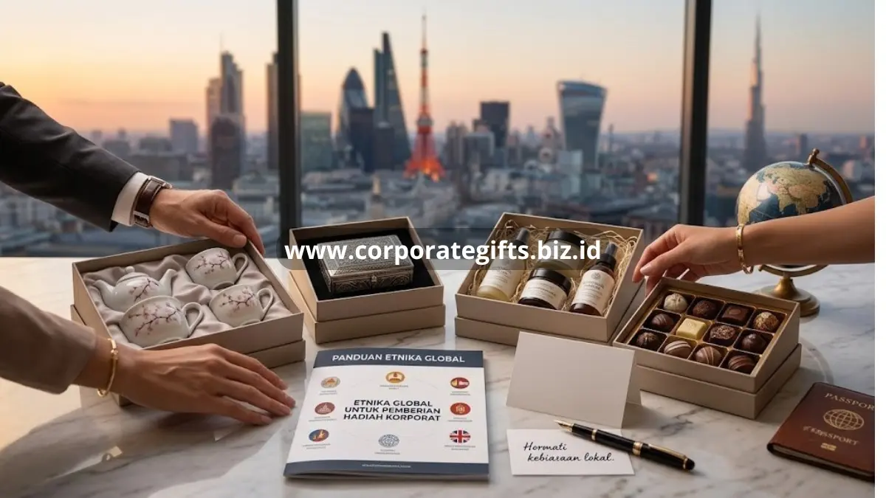

Poin Penting:
- Etika dan norma budaya setempat sangat penting diperhatikan saat memberikan hadiah internasional untuk menghindari kesalahpahaman.
- Setiap negara memiliki perbedaan dalam simbolisme warna, jumlah barang, jenis produk, serta batas wajar dan waktu pemberian hadiah.
- Sebaiknya hindari penggunaan simbol keagamaan, politik, atau isu sensitif lainnya yang berpotensi menyinggung klien dari budaya berbeda.
- Penting untuk menyesuaikan kemasan dan pesan pengantar dengan gaya komunikasi bisnis di negara tujuan, baik yang lebih formal maupun hangat dan personal.
Corporate gifts untuk klien internasional memerlukan perhatian khusus terhadap etika dan norma budaya setempat agar hadiah diterima secara positif, bukan menimbulkan kesalahpahaman. Memahami perbedaan ini membantu perusahaan membangun kesan profesional sekaligus menghormati budaya mitra bisnis di berbagai negara.
Mengapa Etika dan Budaya Penting dalam Pemberian Corporate Gifts Internasional?
Etika dan budaya penting karena makna sebuah hadiah dapat berbeda secara signifikan antar negara. Barang yang dianggap sopan dan bernilai positif di satu wilayah bisa jadi memiliki konotasi kurang pantas di wilayah lain. Kesalahan dalam memilih corporate gifts untuk klien internasional berpotensi menimbulkan kesan tidak profesional, bahkan dapat memengaruhi hubungan kerja sama yang sedang dibangun.
Selain itu, banyak negara memiliki aturan atau kebiasaan tidak tertulis mengenai batas nilai hadiah yang dianggap wajar dalam konteks bisnis. Hadiah yang terlalu mewah dapat menimbulkan kesan mencurigakan terkait etika bisnis, sementara hadiah yang terlalu sederhana bisa dianggap kurang menghargai relasi yang sudah terjalin.
Pertimbangan budaya apa yang penting untuk diingat saat mengirimkan corporate gifts?
Pertimbangan budaya yang perlu diperhatikan meliputi simbolisme warna, jumlah barang, jenis produk, serta waktu pemberian yang dianggap tepat di negara tujuan. Di beberapa budaya Asia Timur misalnya, warna dan jumlah barang tertentu memiliki makna simbolis yang perlu dihindari dalam konteks hadiah bisnis. Sementara di sejumlah negara Barat, fokus utama biasanya lebih pada kepraktisan dan kualitas produk dibandingkan simbolisme.
Selain simbolisme, perusahaan juga perlu memperhatikan kebiasaan lokal terkait cara penyampaian hadiah, apakah lebih umum diberikan secara langsung dalam pertemuan formal atau dikirim melalui perusahaan ekspedisi menjelang momen tertentu. Melakukan riset singkat tentang kebiasaan bisnis di negara tujuan sangat bermanfaat untuk menghindari kesalahpahaman yang tidak diinginkan.

Kategori Corporate Gifts yang Aman Lintas Budaya
Beberapa kategori corporate gifts cenderung lebih aman digunakan lintas budaya karena sifatnya universal dan minim risiko kesalahpahaman simbolis. Produk berbasis kualitas dan fungsi seperti perlengkapan kerja premium, produk perawatan diri netral, atau hadiah bertema lokal dari negara pemberi hadiah sering diterima secara positif oleh klien internasional karena memberi nilai cerita budaya yang otentik.
Penting juga untuk menghindari simbol keagamaan, politik, atau hal sensitif lain yang berpotensi menyinggung klien dari latar belakang budaya berbeda. Pendekatan netral namun tetap personal umumnya menjadi strategi paling aman dalam konteks bisnis internasional.
Bagaimana Menyesuaikan Kemasan dan Pesan Corporate Gifts untuk Klien Global?
Kemasan dan pesan pengantar untuk corporate gifts hendaknya disesuaikan dengan gaya komunikasi bisnis di negara yang dituju. Sebagian budaya menghargai pesan yang hangat dan personal, sementara budaya lain lebih menyukai gaya komunikasi formal dan ringkas. Kemasan yang rapi dan elegan menjadi elemen universal yang hampir selalu memberi kesan positif di berbagai budaya bisnis.
Menyertakan kartu ucapan singkat dalam bahasa yang dipahami klien, disertai identitas perusahaan yang jelas, membantu memperkuat kesan profesional sekaligus menunjukkan perhatian terhadap detail dalam relasi bisnis lintas negara.
Kesimpulan
Memberikan corporate gifts untuk klien internasional membutuhkan kepekaan terhadap etika dan budaya setempat agar hadiah diterima dengan baik dan memperkuat relasi bisnis lintas negara. Dengan riset kebiasaan lokal dan pemilihan produk yang tepat, perusahaan dapat menghindari kesalahpahaman sekaligus menciptakan kesan profesional yang konsisten. CorporateGifts memahami kebutuhan hadiah korporat lintas budaya dan siap membantu Anda memilih corporate gifts yang sesuai untuk klien internasional Anda. Hubungi CorporateGifts untuk konsultasi corporate gifts internasional Anda.
FAQ
1. Mengapa etika dan budaya penting dalam memberikan corporate gifts internasional?
Makna sebuah hadiah dapat berbeda secara signifikan antar negara. Kesalahan memilih hadiah berpotensi menimbulkan kesan tidak profesional dan memengaruhi relasi kerja sama.
2. Apa saja pertimbangan budaya yang perlu diperhatikan saat memilih hadiah?
Pertimbangan meliputi simbolisme warna, jumlah barang, jenis produk, batas nilai hadiah yang dianggap wajar, serta waktu dan cara penyampaian hadiah.
3. Apakah ada kategori corporate gifts yang aman diberikan lintas budaya?
Ya, produk berbasis kualitas dan fungsi seperti perlengkapan kerja premium, produk perawatan diri netral, atau hadiah bertema lokal dari negara pemberi biasanya minim risiko kesalahpahaman.
4. Apa yang harus dihindari saat memilih hadiah untuk klien internasional?
Penting untuk menghindari simbol keagamaan, politik, warna dan jumlah barang yang bermakna negatif di budaya tertentu, atau hal sensitif lain yang berpotensi menyinggung klien.
5. Bagaimana cara menyusun kemasan dan pesan hadiah untuk klien global?
Kemasan harus rapi dan elegan. Pesan pengantar sebaiknya disesuaikan dengan gaya komunikasi bisnis di negara tujuan, dilengkapi dengan kartu ucapan singkat dalam bahasa yang dipahami klien.
Butuh rekomendasi cepat untuk corporate gift?
Chat tim Pusat Souvenir & Merchandise Kantor untuk kurasi pilihan sesuai budget & kebutuhan brand Anda.